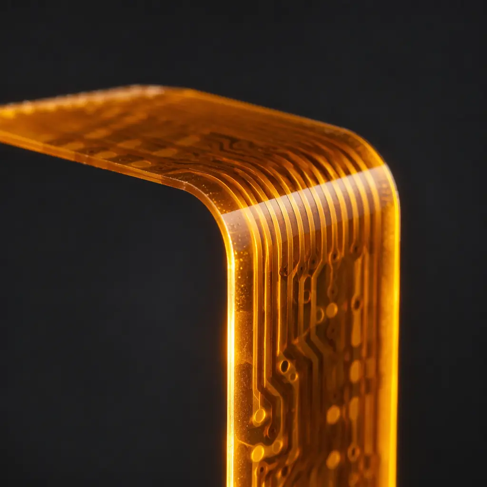
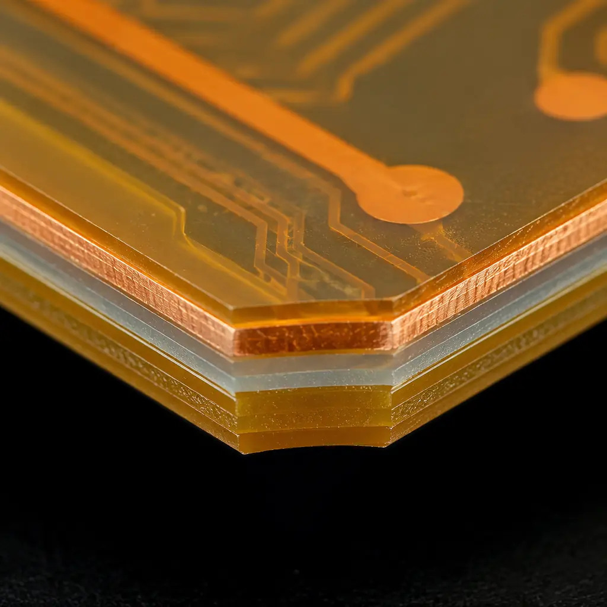
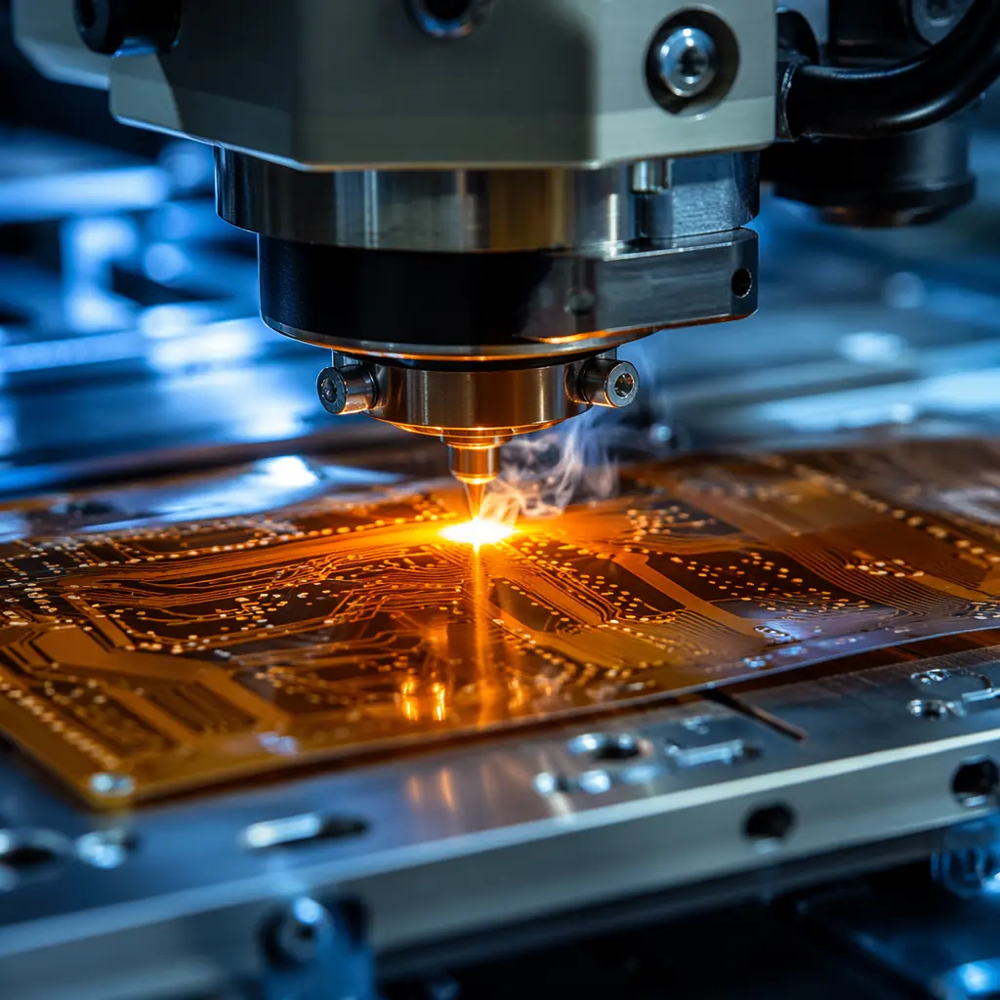
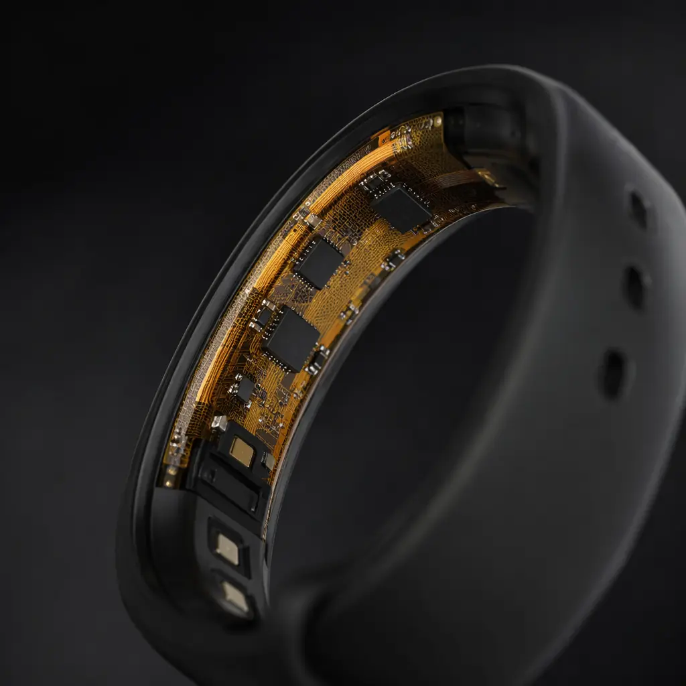

84|
84| Flexible printed circuits account for roughly 15% of the global PCB market and are growing at nearly twice the rate of rigid boards, driven by wearable electronics, medical implants, automotive sensor networks, and aerospace systems where weight and space are at a premium. Yet procurement teams frequently treat flex PCB sourcing identically to rigid PCB sourcing — and that is where budgets get destroyed. A flex PCB is a different product with different materials, different failure modes, and different cost drivers.
102| 103|At Huaxing PCBA, our Shenzhen facility processes over 50,000 flex and rigid-flex boards per month across 8 SMT lines, with polyimide lamination capabilities supporting up to 12-layer flex constructions. This guide covers what we see engineering teams get right — and wrong — on their first flex PCB project.
104| 105|
106| 107| 108|What Is a Flex PCB — and When Should You Actually Use One?
109| 110|A flex PCB replaces the traditional rigid FR-4 substrate with a thin polyimide (PI) or polyester (PET) film, typically 25–125μm thick. The result is a circuit board that can be bent, folded, twisted, or dynamically flexed millions of times — but only if designed correctly. The IPC-2223 standard governs flex PCB design, and ignoring it is the single most common cause of first-article failure.
111| 112|Dynamic Flex — Repeated Bending During Operation
116|Found in printer heads, robotic arms, laptop hinges, and medical ultrasound probes. These circuits must survive hundreds of thousands to millions of flex cycles. Design rules are strict: neutral bend axis positioning, minimum bend radius of 10× the total circuit thickness, and absolutely no vias or component pads in the bend zone. Our IPC Class 3 flex builds — see our IPC Class 2 vs Class 3 guide — undergo 100,000-cycle bend testing as a standard validation gate.
117|Static Flex — Bend-to-Install, Then Fixed
124|Used to replace wire harnesses in automotive dashboards, satellite solar panel interconnects, and consumer electronics. The board is bent once during assembly and never moved again. Design constraints are more forgiving — bend radii down to 6× thickness are acceptable — but material creep over time and temperature cycling still demand careful substrate material selection.
125|Rigid-Flex — Hybrid Constructions for 3D Packaging
132|Rigid sections carry components; flex sections provide the interconnects. This approach eliminates board-to-board connectors, reducing weight by up to 40% and improving signal integrity by removing connector parasitics. Our team has built rigid-flex assemblies up to 12 layers for aerospace guidance systems. If your design combines rigid and flex sections, our rigid-flex manufacturing guide covers the full process in detail.
133|Key Decision Rule: If your design replaces a wiring harness with 8+ discrete wires, a flex PCB pays for itself in reduced assembly labor after the first 500 units. If your design needs to bend during operation more than 1,000 times in its lifetime, you need dynamic flex design rules — static flex rules will fail.
138|Flex PCB Material Selection — The Foundation of Reliability
142| 143|Material choice in flex PCB is not a cost optimization exercise; it is a reliability decision. Unlike rigid boards where FR-4 is the default, flex circuits have no universal "default" substrate. The table below summarizes the four core material layers in every flex stackup:
144| 145|| Layer | Material Options | Thickness Range | Key Property |
|---|---|---|---|
| Base substrate | Polyimide (PI), Polyester (PET), LCP | 12.5–125μm | Tg 250°C (PI) vs 80°C (PET) |
| Conductor | RA copper, ED copper | 9–70μm (¼oz–2oz) | RA copper survives 5× more bend cycles than ED |
| Adhesive | Acrylic, epoxy, adhesive-free | 12–50μm | Adhesive-free systems reduce total thickness by 20% |
| Coverlay / Covercoat | Polyimide coverlay, photoimageable solder mask | 12.5–25μm | Coverlay required in bend zones; solder mask cracks under flex |

154| 155|Polyimide (PI) vs. Polyester (PET): Polyimide dominates 90%+ of flex PCB applications because it withstands soldering temperatures (Tg 250°C+) and offers superior chemical resistance. Polyester (PET) is cheaper but cannot survive reflow soldering — it is limited to low-temperature assembly or connector-only flex applications. For any design requiring SMT component placement, polyimide is non-negotiable.
156| 157|RA vs. ED Copper: Rolled-annealed (RA) copper has an elongated grain structure aligned in the rolling direction, giving it dramatically better fatigue resistance under bending. Electro-deposited (ED) copper has a columnar grain structure that cracks under repeated flex. The cost difference is approximately 15–25%, yet using ED copper in a dynamic flex application guarantees field failure. Our comprehensive materials guide covers copper selection in depth.
158| 159| 160|Flex PCB Design Rules That Prevent Field Failures
161| 162|Flex PCB design is where most projects go wrong. The rules are different from rigid PCB design, and violating even one of them can turn a working prototype into a field-return nightmare. These are the five rules our engineering team enforces on every flex design review:
163| 164|Bend Radius — The Non-Negotiable Starting Point
168|IPC-2223 specifies a minimum bend radius of 10× total circuit thickness for single-sided flex and 20× for double-sided. For a 200μm-thick single-sided flex, that is a 2mm minimum bend radius. Tighter bends concentrate stress on the outer copper layer, causing micro-cracks that propagate over time. We reject designs with bend radii under 6× for any application — even static installs need margin for temperature expansion.
169|Trace Routing — Curved, Never Right-Angled
176|Traces crossing the bend zone must run perpendicular to the bend axis, not parallel. Use curved radii instead of 45° or 90° corners — sharp angles are stress concentrators. Stagger traces on different layers so they do not stack directly above each other (the "I-beam" effect magnifies bending stress). Our DFM guidelines include specific trace routing rules for flex designs.
177|Via Placement — Zero Vias in the Bend Zone
184|Vias create a rigid discontinuity in an otherwise flexible material. Any via placed in or within 1mm of the bend zone becomes a crack initiation point. For designs requiring layer transitions, use tear-drop shaped pads and route the via outside the flexing region entirely. Our PCB via technology guide explains via types and when to use each.
185|Stiffener Placement — Support Where Rigidity Is Needed
192|Flex PCBs need stiffeners (FR-4, polyimide, or stainless steel) under component mounting areas, connector pads, and ZIF (Zero Insertion Force) tail contacts. Without a stiffener, the flex circuit deflects during SMT pick-and-place, causing tombstoning and misalignment. Stiffener thickness is typically matched to the connector specification — 0.2–0.3mm for standard ZIF connectors.
193|Copper Balancing — Symmetry Prevents Warpage
200|Unbalanced copper distribution across layers causes the flex circuit to curl after lamination — a problem that gets worse with heat. Design symmetrical copper pours: if layer 1 has a ground plane, layer 2 needs an equivalent copper fill. Cross-hatched ground planes (not solid) preserve flexibility while maintaining electrical continuity. For controlled impedance designs, the cross-hatch pattern must be modeled in the field solver, not treated as a solid plane.
201|Procurement Reality: A flex PCB design review that catches these five issues before Gerber generation saves an average of 14 days and $3,200 in prototype iterations. We offer free DFM reviews on every flex order — send your design files to our engineering team before committing to production.
206|Manufacturing Process — How Flex PCBs Are Made
210| 211|Flex PCB manufacturing shares some steps with rigid PCB fabrication — imaging, etching, drilling — but the material handling is fundamentally different. Polyimide is not a rigid sheet; it is a flexible film that requires tension-controlled processing, specialized lamination presses, and laser-based via formation. Here is the production flow we use:
212| 213|
214| 215|Material Preparation and Cleaning
219|Polyimide film arrives in rolls and is cut to panel size (250×350mm is our standard flex panel). The surface is plasma-cleaned to remove organic residues and improve copper adhesion. This step is critical — polyimide absorbs moisture from ambient air, and any residual humidity causes delamination during the 180°C lamination cycle. Our facility stores all flex materials in nitrogen-purged cabinets at 23±2°C and <30% RH.
220|Imaging and Etching
227|Dry film photoresist is laminated onto the copper-clad polyimide, exposed with the circuit pattern, and developed. The etching process uses alkaline cupric chloride chemistry, carefully controlled to avoid undercutting the thin copper foil. For fine-pitch flex (≤75μm trace/space), we use direct imaging (LDI) systems with ±10μm registration accuracy — tighter than the ±25μm achievable with conventional contact printing.
228|Coverlay Lamination
235|This is the step that differentiates flex from rigid manufacturing. A polyimide coverlay film — pre-cut with openings for pads and components — is aligned to the etched circuit and laminated under heat (180°C) and pressure (25 kg/cm²) for 60–90 minutes. Misalignment exceeding 50μm exposes trace edges or covers pads, both of which cause assembly defects. Our automated optical alignment systems hold coverlay registration to ±25μm.
236|Laser Drilling and Surface Finish
243|Microvias in flex PCBs are formed by UV laser ablation — no mechanical drill bits, which would tear the polyimide film. Our 355nm UV laser systems produce 50μm-diameter vias with clean sidewalls, essential for reliable plating. After via formation, electroless copper deposition creates the via wall, followed by electrolytic copper plating to the target thickness. The final step is ENIG surface finish — our ENIG vs HASL comparison explains why ENIG is the default for flex PCBs.
244|Laser Profiling and Electrical Test
251|Unlike rigid PCBs that are routed with mechanical bits, flex circuits are profiled with a UV laser cutter that produces smooth, burr-free edges. Mechanical routing leaves micro-tears in the polyimide that become crack initiation sites during bending. After profiling, every flex board undergoes 100% flying probe electrical test — continuity, isolation, and netlist verification — plus bend-cycle testing on a sample basis for dynamic flex applications. Our PCB testing methods guide details all inspection technologies used.
252|Flex PCB Cost Factors and Optimization Strategies
257| 258|Flex PCBs cost 3–5× more than equivalent rigid boards per unit area. The premium comes from polyimide material cost (4–6× more expensive than FR-4 per square meter), lower panel utilization (flex circuits often have irregular outlines), and longer lamination cycle times. But the total system cost often favors flex: eliminating connectors and wiring harnesses reduces assembly labor, improves reliability, and shrinks the enclosure. Here is how to optimize your flex PCB BOM:
259| 260|| Cost Driver | Lower Cost | Higher Cost | Savings Potential |
|---|---|---|---|
| Layer count | 1–2 layers | 4–8 layers | 40–60% |
| Substrate | PET (no soldering) | Polyimide | 25–35% |
| Copper type | ED copper, static flex | RA copper, dynamic flex | 15–25% |
| Coverlay vs solder mask | Photoimageable solder mask (static) | Laser-cut PI coverlay | 20–30% |
| Stiffeners | FR-4 stiffener | Stainless steel or PI stiffener | 10–15% |
| Panel utilization | Rectangular outline, panelized | Complex contour, single-up | 15–30% |
Our comprehensive cost factors guide covers additional optimization strategies applicable to all PCB types. For flex-specific savings, the single highest-impact decision is panel utilization — a rectangular flex outline that nests efficiently on a 250×350mm panel can reduce unit cost by 30% compared to a custom-contoured design that wastes 40% of the panel area.
271| 272|Prototype-to-Production Economics: Flex PCB NRE costs (tooling, coverlay laser programming, test fixtures) typically range from $800–2,500 depending on layer count and complexity. Amortizing this across a 1,000-unit production run adds $0.80–2.50 per unit — negligible compared to the $3–8 per unit saved by eliminating connectors. Our prototype vs production guide helps you plan the transition.
274|When Flex PCB Beats Rigid PCB — And When It Does Not
278| 279|Flex PCB is not a universal upgrade. For applications where the board sits flat in an enclosure with ample space, standard rigid PCB at 20% of the cost is the correct engineering choice. Flex circuits earn their premium in specific use cases where the value of flexibility, weight reduction, or connector elimination justifies the higher unit cost. Here is the decision framework:
280| 281|
282| 283|Choose Flex PCB When:
287|Your product needs to fold into a 3D enclosure (cameras, drones, medical endoscopes); you are replacing a wiring harness with 8+ discrete wires; weight reduction is critical (aerospace, drones — flex saves 40–60% vs rigid+connectors); the board must survive dynamic bending (robotics, hinges, wearables); or you need a high-reliability interconnect where connector failure is unacceptable (implantable medical devices, automotive safety systems).
288|Stick With Rigid PCB When:
295|Your board mounts flat in a standard enclosure; the device has no moving parts or flexing requirements; your component density requires 8+ rigid layers with heavy BGAs (flex struggles beyond 6 layers with fine-pitch BGA); the production volume is under 500 units and the NRE cannot be amortized; or the environment involves continuous exposure to temperatures above 150°C (polyimide Tg is 250°C, but long-term >150°C accelerates adhesive degradation).
296|Getting Your Flex PCB Project Into Production
301| 302|Flex PCB is not harder than rigid PCB — it is different. The engineering teams that succeed with flex are the ones that treat it as a separate discipline with its own design rules, material constraints, and manufacturing economics. The teams that fail are the ones that take a rigid PCB layout, swap the substrate to polyimide, and expect it to work. It will not.
303| 304|At Huaxing PCBA, our flex PCB production line handles single-sided through 12-layer flex and rigid-flex constructions, with material options spanning standard polyimide, adhesiveless laminates, and LCP for high-frequency applications. We provide free DFM review on every flex order — including bend radius verification, coverlay clearance analysis, and stiffener compatibility checks — with a 24-hour engineering feedback turnaround. Read our turnkey PCB assembly guide to see how flex assembly integrates into full-box-build production, or contact our engineering team with your design files for a project-specific consultation.
305| 306| 378|
379|
378|
379|